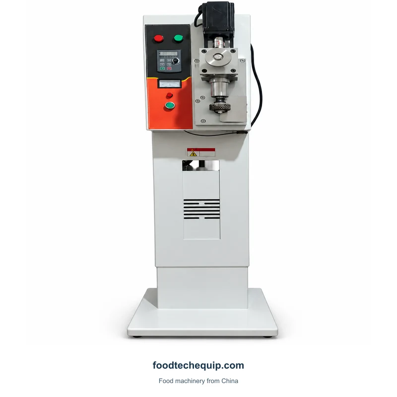
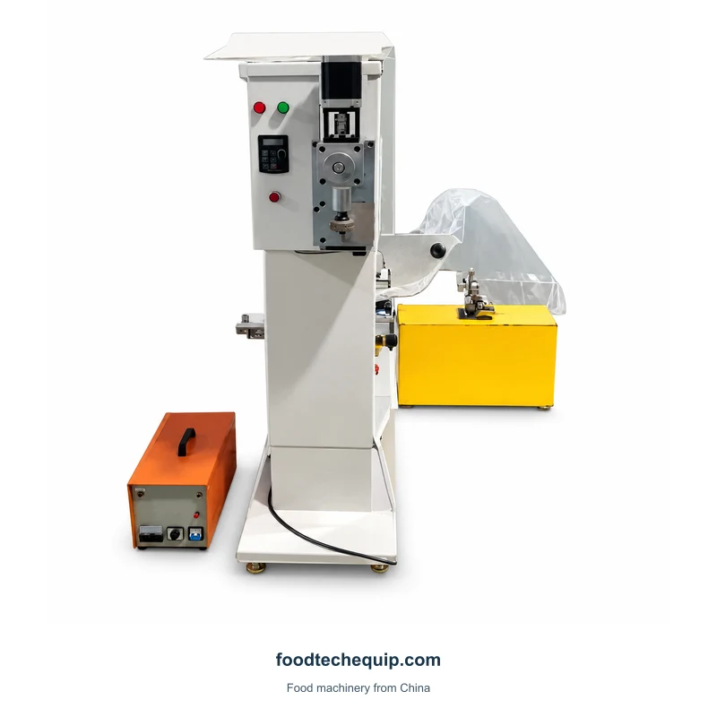
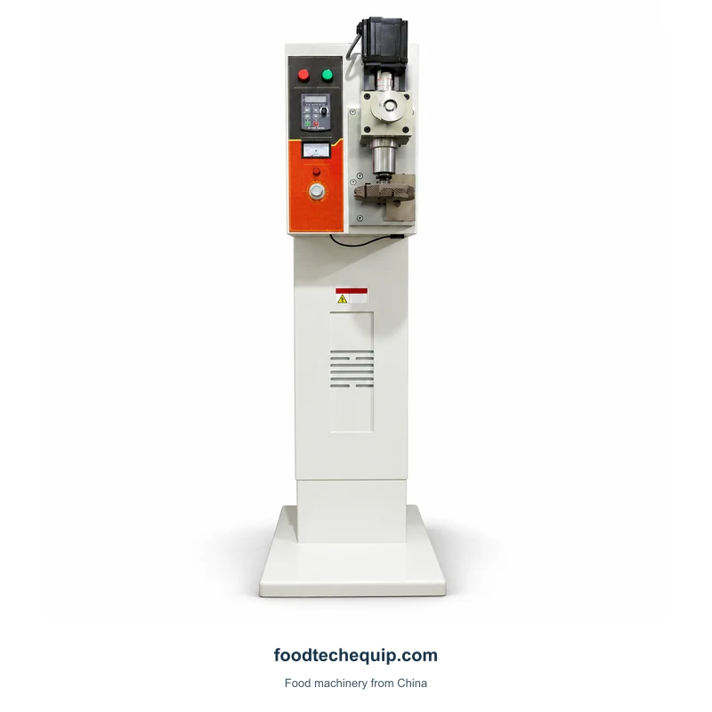

Ultrasonic Sealing
Ultrasonic Bag Sealing Machine
Ultrasonic sealing equipment with nonwoven fabric listed as the sealing material.
View equipment
Select the image to view it larger.
A floor-standing ultrasonic bag sealing layout with front-mounted controls.
Equipment selection · Installation guidance · Remote support
Explore product information ↓Define the joint width and bag-mouth access needed for your application. Use material samples to discuss the sealing task rather than selecting solely from the pedestal layout.
Selecting a Bag or Tube Sealing Process ↗Specify the material layers and intended joint before comparing working arrangements. Filled-bag handling and tube-end closing raise different access and support questions, even where the requested joining process sounds similar.
Ultrasonic sealing equipment with nonwoven fabric listed as the sealing material.
View equipment
An upright ultrasonic bag sealer with working head and wired controller.
View equipment
A pedestal ultrasonic bag sealing machine with a separately listed sealing configuration.
View equipment